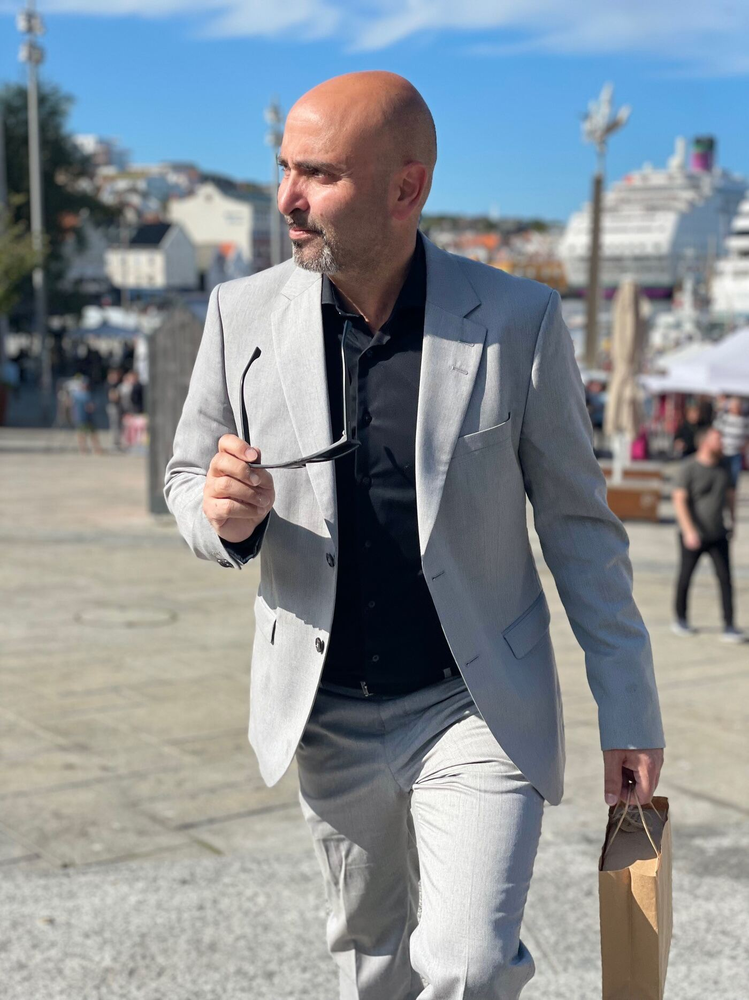
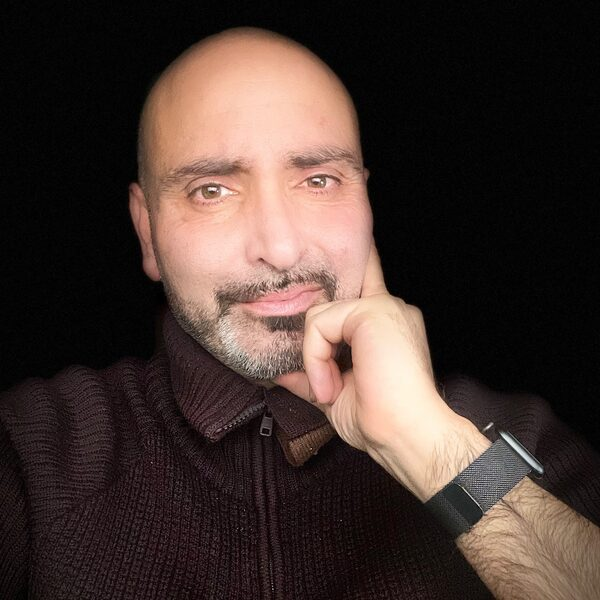

All things AI
Fra operasjonelt til styrerommet.
Fra kildekoden til styrerommet. Kommersiell, strategisk, og hands-on med verktøyet selv.
Jeg bygger AI-produkter på dagtid og diskuterer AI-strategi med ledergrupper på kvelden. Samme uke, samme innsikt. Ingen powerpoint uten praksis bak.
Jeg snakker ikke om AI. Jeg bygger med det, hver dag. Og tar den erfaringen rett inn i styrerommet.
24 år med kommersiell ledelse i Shell, offentlig sektor og egne selskaper — fra gasskontrakter i fire land og en portefølje på flere milliarder euro, til batteriløsninger for arbitrasje og frekvensregulering før de store aktørene så det komme. Styringssystemer for risiko og etterlevelse fra Proactima, startet med AI-governance før AI Act eksisterte, og nå snart 18 måneder med hands-on AI-erfaring som byggeren bak flere egne AI-produkter. Jeg vibekoder selv, på samme måte som den nye generasjonen bruker AI, og implementerer AI-sikkerhet, ansvarlighet og styring — slik jeg ser ekspertene i de fremste selskapene gjøre det, der den nye generasjonen bruker AI.
Det gir meg noe de fleste rådgivere ikke har: samme uke som jeg diskuterer AI-strategi med et styre, sitter jeg og bygger noe med de samme verktøyene. Erfaringen er fersk, praktisk, og testet på ekte problemer. Ikke hentet fra en trend-rapport.
Det jeg har bygget, og hvorfor det betyr noe
Ikke konsept-skisser. Produkter i faktisk utvikling, testet på ekte behov.
Sofia
De fleste kunder gir opp etter ett ubesvart forsøk. Telefonen ringer etter stengetid, kontaktskjemaet får aldri svar, og konkurrenten som svarer først vinner ofte kunden — det er smertepunktet de fleste norske SMB-er lever med hver dag, uten å ha en AI-strategi å møte det med. Sofia er svaret: en AI-resepsjonist som svarer med en gang, dag og natt, og gir hvert selskap et levende AI-fundament å bygge videre på. Du kan chatte med henne selv nederst på denne siden. Talebaserte AI-tjenester eksploderer internasjonalt — se cookinfiesta.com som et eksempel på hvor langt det kan tas — og det er neste steg for Sofia.
Matchforger
Norge har over 600 milliarder kroner i offentlige utlysninger, og EU forvalter over 2 milliarder kroner i relevante prosjektmidler. De fleste mindre selskaper vet ikke at det de allerede leverer kan være verdt langt mer i det markedet. Matchforger kobler bedrifter til utlysninger hos blant annet Doffin og TED, og hjelper de mindre selskapene med å finne partnere som gjør at de når bedre opp i konkurransen. Neste steg er å la selskaper finne hverandre direkte, ved å legge ut egne oppdrag og forespørsler.
Nikola
SMB-er har vanskelig for å ta i bruk AI. Verktøyene finnes, men ingen har tid til å knytte alt sammen i en travel hverdag. Det er nettopp den terskelen jeg har jobbet for å fjerne, slik at SMB-er også kan bli med på reisen. Nikola er en lavterskel AI-plattform som følger bedriften din og bygger HMS, HR, markedsinnsikt, regnskap, kundeservice, ISO-sertifiseringer og svar på spørsmål om skatt og andre juridiske forhold. Vi har kommet så langt at vi nå tester en HR-modul som hjelper rekruttering i sanntids intervjuer, fordi vi allerede har erfaring med tale-til-tale-applikasjoner. Kobles rett på Tripletex og HR-systemene dine, eller bare slipp inn et Excel-ark. Markedet for en norsk AI-plattform for de mindre selskapene er enormt, og de fleste har ikke kommet i gang ennå.
AI-hackathon med team i India
Gjennom Outskill sitt intensive AI-kurs bygget jeg, sammen med et internasjonalt team med utviklere i India, et AI-drevet research- og konkurrentanalyseverktøy: fra webhook-pipeline til skraping til AI-analyse. Levert på tid, midt på natten norsk tid.

Interim ledelse for AI-transformasjon
Du snakker sikkert allerede med de store konsulenthusene. Jeg inviterer til noe mindre: en kort samtale som faktisk beveger noe. Ingen lange forslag, ingen anbudsrunder.
Ved siden av å bygge og videreutvikle Sofia, Matchforger og Nikola, bistår jeg selskaper med interim ledelse: rask styring når AI faktisk skal inn i organisasjonen og implementeres.
Jeg har selv programmert løsningene jeg snakker om. Det betyr at jeg kan gå fra strategisk samtale i styrerommet til konkret vurdering av hva som faktisk er mulig å bygge. Ingen tolk nødvendig mellom teknologi og forretning.
Styrerommet: rundbordsamtaler om AI
Ved siden av det jeg bygger selv, tilbyr jeg «Styrerommet»: rundbordssamtaler som tar AI-samtalen inn i styrerom, ledergrupper og HR-miljøer. Samtalene kombinerer HR, rekruttering og organisasjonsutvikling med det kommersielle og teknologiske. Styrerommet kan bestilles nå. Ta kontakt, så setter vi opp en samtale tilpasset ditt styre eller din ledergruppe.
Noen tanker jeg står ved
Utvalgte linjer fra det jeg har skrevet om AI, ledelse og det som faktisk skjer i organisasjoner. Kjenner du deg igjen i en av dem?
«Tenk deg at du ansetter en ivrig fem-åring med en hukommelse som en 100-åring.»
«Your process can be optimized. Your organization has to evolve. Two different jobs. Only one of them has a ceiling.»
«The machine just gave me the best case study I could have asked for. It rejected me. So I hired it as Exhibit A.»
«Excel is many small boxes pretending not to be boxes.»
«I dag sitter konteksten i ryggmargen til folk. Den går ut døra sammen med dem.»
Slår en av disse an? Da har vi noe å snakke om.
Ta kontaktTa kontakt direkte
Jeg reiser dit jobben er, eller møtes digitalt. Ta kontakt her, så finner vi et tidspunkt.
Sofia — resepsjonen
Chat med Sofia. Hun kan fortelle om meg, og tar gjerne imot kontaktinfo hvis du vil at jeg tar kontakt.
Sofia er en AI-assistent, ikke et menneske. Meldingene dine behandles av Retell/OpenAI for å generere svar. Kontaktinfo du selv oppgir (navn, e-post, telefon) lagres kun for at Christian skal kunne følge deg opp — aldri til andre formål. Vil du at informasjonen slettes? Send en e-post til christian@caramelly.no.
«Det er som å ta lappen. Du kan ikke lese deg til den. Du må kjøre opp selv.»
For 18 måneder siden tvang jeg meg selv til å løse AI hands-on.
Fra et innlegg på LinkedIn →